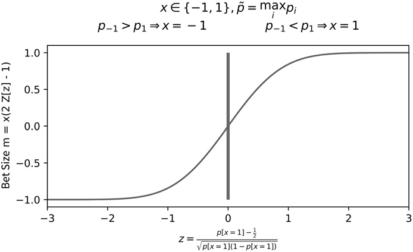
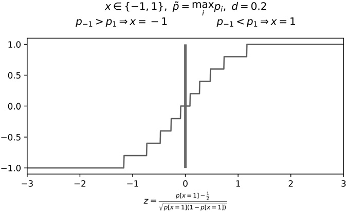
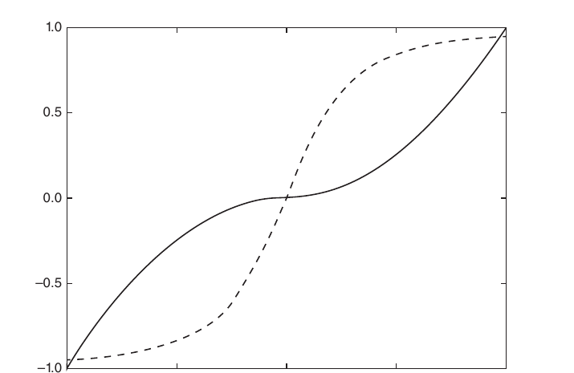

第三部分：回测
仓位规模
10.1 动机
策略游戏与投资之间有许多有趣的相似之处。我合作过的一些顶尖投资组合经理都是扑克高手；其中擅长扑克的人似乎比擅长国际象棋的更多。原因之一就在于下注规模：德州扑克为理解和训练投资中的仓位规模管理提供了很好的类比。ML 算法的准确率可以很高，但如果仓位规模设置不当，投资策略终究会亏钱。本章将介绍几种根据 ML 预测确定仓位规模的方法。
10.2 与策略无关的仓位规模方法
考虑同一金融工具上的两个策略。设 \(m_{i,t}\in[-1,1]\)为仓位规模，对应策略 \(i\)和时点 \(t\)，其中 \(m_{i,t}=-1\)表示满仓做空，\(m_{i,t}=1\)表示满仓做多。假设第一个策略给出的仓位规模序列为 \([m_{1,1},m_{1,2},m_{1,3}]=[.5,1,0]\)；同期市场价格序列为 \([p_1,p_2,p_3]=[1,.5,1.25]\)，其中 \(p_t\)表示时点 \(t\)的价格。另一个策略给出的仓位序列为 \([m_{2,1},m_{2,2},m_{2,3}]=[1,.5,0]\)；因为市场走势一度不利于初始满仓仓位，它被迫减仓。两个策略的预测最终都正确（价格在 \(p_1\)和 \(p_3\)之间上涨了 25%），但第一个策略赚了 0.5，第二个策略却亏了 0.125。
我们希望设置仓位时留出一部分现金，以便在交易信号先增强、后减弱时仍有加仓余地。一种方法是计算序列 \(c_t=c_{t,l}-c_{t,s}\)，其中 \(c_{t,l}\)表示同时有效的多头交易信号数，计算时点为 \(t\)；\(c_{t,s}\)表示同时有效的空头交易信号数，计算时点为 \(t\)。多头和空头两侧同时有效的信号数，可分别像第 4 章计算标签并发度那样得到（回想 t1对象，其时间区间会相互重叠）。然后对 \(\{c_t\}\)拟合双高斯混合分布，方法可参考 López de Prado 和 Foreman [2014]。之后，仓位规模按下式计算：
其中：\(F[x]\)是所拟合双高斯混合分布在取值 \(x\)处的累积分布函数（CDF）。例如，如果出现更强信号的概率只有 0.1，就可以把仓位规模设为 0.9。当前信号越强，继续变强的概率就越小，因此仓位应当越大。
第二种方法采用预算思路。先计算同时有效的多头信号数量的最大值（或其他分位数），即 \(\max_i\{c_{i,l}\}\)，以及同时有效的空头信号数量的最大值，即 \(\max_i\{c_{i,s}\}\)，再按下式计算仓位规模：
其中：\(c_{t,l}\)表示同时有效的多头交易信号数，计算时点为 \(t\)；\(c_{t,s}\)表示同时有效的空头交易信号数，计算时点为 \(t\)。目标是在最后一个并发信号触发之前，不要过早达到最大仓位。
第三种方法是第 3 章介绍的元标签化。我们拟合 SVC、RF 等分类器来估计误分类概率，再根据该概率确定仓位规模。1这种方法有两个优点。第一，决定仓位规模的 ML 算法独立于主模型，因此可以加入能够预测假阳性的特征（见第 3 章）。第二，预测概率可以直接映射为仓位规模。下面说明具体做法。
10.3 根据预测概率确定仓位规模
记 \(p[x]\)为标签 \(x\)出现的概率。若只有两个可能结果，\(x\in\{-1,1\}\)，我们希望检验原假设 \(H_0:p[x=1]=\frac{1}{2}\)。检验统计量为：
其中 \(z\in(-\infty,+\infty)\)，且 \(Z\)表示标准正态分布。仓位规模定义为 \(m=2Z[z]-1\)，其中 \(m\in[-1,1]\)和 \(Z[\cdot]\)分别表示仓位的取值范围和相应的累积分布函数；这里的分布为 \(Z\)。
若可能结果超过两个，则采用一对其余法。设 \(X=\{-1,\ldots,0,\ldots,1\}\)为不同仓位规模所对应的标签集合，\(x\in X\)为预测标签。换言之，每个标签由与之对应的仓位规模来标识。对每个标签 \(i=1,\ldots,\|X\|\)，估计概率 \(p_i\)，并满足 \(\sum_{i=1}^{\|X\|}p_i=1\)。定义 \(\tilde p=\max_i\{p_i\}\)为标签 \(x\)的概率，并检验 \(H_0:\tilde p=\frac{1}{\|X\|}\)。2
仓位规模定义为 \(m=x\underbrace{(2Z[z]-1)}_{\in[0,1]}\)，其中 \(m\in[-1,1]\)和 \(Z[z]\)分别承担两个作用：前者限定仓位的取值范围，后者调节预测 \(x\)的仓位大小（方向由 \(x\)的正负号决定）。图 10.1 展示了仓位规模如何随检验统计量变化。

代码清单 10.1 实现了从概率到仓位规模的映射。它既能处理来自元标签估计器的预测，也能处理来自标准标签估计器的预测。在第 2 步中，它还会对有效仓位取平均，并将最终结果离散化；后续各节会解释这两项操作。
def getSignal(events,stepSize,prob,pred,numClasses,numThreads,**kargs):
# get signals from predictions
if prob.shape[0]==0:return pd.Series()
#1) generate signals from multinomial classification (one-vs-rest, OvR)
signal0=(prob-1./numClasses)/(prob*(1.-prob))**.5 # t-value of OvR
signal0=pred*(2*norm.cdf(signal0)-1) # signal=side*size
if 'side' in events:signal0*=events.loc[signal0.index,'side'] # meta-labeling
#2) compute average signal among those concurrently open
df0=signal0.to_frame('signal').join(events[['t1']],how='left')
df0=avgActiveSignals(df0,numThreads)
signal1=discreteSignal(signal0=df0,stepSize=stepSize)
return signal110.4 对有效仓位取平均
每笔交易都有一个持有期，从产生时一直到首次触及障碍的时点 \(t_1\) （见第 3 章）。一种做法是每当新交易信号到来就覆盖旧信号，但这很可能造成过高换手率。更合理的办法是，在任一时点对所有仍然有效的交易仓位规模取平均。代码清单 10.2 给出了一种实现。
def avgActiveSignals(signals,numThreads):
# compute the average signal among those active
#1) time points where signals change (either one starts or one ends)
tPnts=set(signals['t1'].dropna().values)
tPnts=tPnts.union(signals.index.values)
tPnts=list(tPnts);tPnts.sort()
out=mpPandasObj(mpAvgActiveSignals,('molecule',tPnts),numThreads,signals=signals)
return out
#---------------------------------------
def mpAvgActiveSignals(signals,molecule):
'''
At time loc, average signal among those still active.
Signal is active if:
a) issued before or at loc AND
b) loc before signal's endtime, or endtime is still unknown (NaT).
'''
out=pd.Series()
for loc in molecule:
df0=(signals.index.values<=loc)&((loc<signals['t1'])|pd.isnull(signals['t1']))
act=signals[df0].index
if len(act)>0:out[loc]=signals.loc[act,'signal'].mean()
else:out[loc]=0 # no signals active at this time
return out10.5 仓位规模离散化
取平均可以减少一部分过度换手，但每次预测仍可能触发一笔很小的交易。这种抖动会导致不必要的频繁交易，因此建议按下式离散化仓位规模：\(m^*=\operatorname{round}\left[\frac{m}{d}\right]d\)，其中 \(d\in(0,1]\)决定离散化的粒度。图 10.2 展示了仓位规模的离散化效果。

代码清单 10.3 实现了这一做法。
def discreteSignal(signal0,stepSize):
# discretize signal
signal1=(signal0/stepSize).round()*stepSize # discretize
signal1[signal1>1]=1 # cap
signal1[signal1<-1]=-1 # floor
return signal110.6 动态仓位规模与限价
回顾第 3 章介绍的三重障碍标签法。价格条 \(i\)在时点 \(t_{i,0}\)形成，此时我们预测首先会触及哪一道障碍。该预测对应一个与障碍设置一致的预测价格 \(E_{t_{i,0}}[p_{t_{i,1}}]\)。在结果发生之前的期间 \(t\in[t_{i,0},t_{i,1}]\)，价格 \(p_t\)不断波动，还可能形成新的预测 \(E_{t_{j,0}}[p_{t_{i,1}}]\)，其中 \(j\in[i+1,I]\)和 \(t_{j,0}\le t_{i,1}\)。第 10.4 节和第 10.5 节讨论了新预测出现时，如何对有效仓位取平均并将仓位规模离散化。
本节介绍一种方法，随市场价格 \(p_t\)和预测价格 \(f_i\)的变化动态调整仓位规模，并在此过程中推导订单限价。设 \(q_t\)为当前仓位，\(Q\)为最大绝对仓位规模，\(\hat q_{i,t}\)为目标仓位规模；所对应的预测是 \(f_i\)，满足
其中：\(m[\omega,x]\)是仓位规模；\(x=f_i-p_t\)是预测价格减去当前市场价格所得的差值；\(\omega\)是控制 S 形函数宽度的系数；\(\operatorname{int}[x]\)表示对 \(x\)取整后的结果。注意，若实数价格差为 \(x\)，\(-1<m[\omega,x]<1\)；整数目标仓位 \(\hat q_{i,t}\)满足界限 \(-Q<\hat q_{i,t}<Q\)。
目标仓位规模 \(\hat q_{i,t}\)可以随着 \(p_t\)的变化动态调整。特别是，当 \(p_t\to f_i\)时，有 \(\hat q_{i,t}\to0\)，因为算法希望锁定收益。这意味着需要一个盈亏平衡限价 \(\bar p\)；对应的订单规模为 \(\hat q_{i,t}-q_t\)，以免实现亏损。具体为：
其中：\(L[f_i,\omega,m]\)可由 \(m[\omega,f_i-p_t]\)反解得到；这里求解的变量是 \(p_t\)，
不必担心 \(m^2=1\)这种情况，因为反函数使用的标准化仓位规模严格位于区间 \((-1,1)\)内部。由于该函数单调，当价格逐渐接近预测值时，算法不会实现亏损，即 \(p_t\to f_i\)。
下面校准 \(\omega\)。给定用户指定的一对数值 \((x,m^*)\)，满足 \(x=f_i-p_t\)和 \(m^*=m[\omega,x]\)，待校准参数可由 \(m[\omega,x]\)反解得到；这里求解的变量是 \(\omega\)，结果为：
代码清单 10.4 实现了根据 \(p_t\)和 \(f_i\)计算动态仓位规模和限价的算法。第一步，校准 S 形函数，使仓位规模为 \(m^*=.95\)时，对应的价格差为 \(x=10\)。第二步，计算目标仓位 \(\hat q_{i,t}\)；参数包括最大仓位 \(Q=100\)，\(f_i=115\)和 \(p_t=100\)。如果尝试 \(f_i=110\)，会得到 \(\hat q_{i,t}=95\)，这与 \(\omega\)的校准一致。第三步，计算限价；对应的订单规模为 \(\hat q_{i,t}-q_t=97\)，结果为：\(\bar p=112.3657\)，并满足 \(p_t<\bar p<f_i\)。该限价位于当前价格与预测价格之间。
def betSize(w,x):
return x*(w+x**2)**-.5
#---------------------------------------
def getTPos(w,f,mP,maxPos):
return int(betSize(w,f-mP)*maxPos)
#---------------------------------------
def invPrice(f,w,m):
return f-m*(w/(1-m**2))**.5
#---------------------------------------
def limitPrice(tPos,pos,f,w,maxPos):
sgn=(1 if tPos>=pos else -1)
lP=0
for j in xrange(abs(pos+sgn),abs(tPos+1)):
lP+=invPrice(f,w,j/float(maxPos))
lP/=tPos-pos
return lP
#---------------------------------------
def getW(x,m):
# 0<alpha<1
return x**2*(m**-2-1)
#---------------------------------------
def main():
pos,maxPos,mP,f,wParams=0,100,100,115,{'divergence':10,'m':.95}
w=getW(wParams['divergence'],wParams['m']) # calibrate w
tPos=getTPos(w,f,mP,maxPos) # get tPos
lP=limitPrice(tPos,pos,f,w,maxPos) # limit price for order
return
#---------------------------------------
if __name__=='__main__':main()除了 S 形函数，也可以使用幂函数 \(\tilde m[\omega,x]=\operatorname{sgn}[x]|x|^\omega\)，其中 \(\omega\ge0\)，\(x\in[-1,1]\)，从而得到 \(\tilde m[\omega,x]\in[-1,1]\)。这种替代方案有以下优点：
- \(\tilde m[\omega,-1]=-1\)，\(\tilde m[\omega,1]=1\)。
- 可以直接调节曲率，所用参数为 \(\omega\)。
- 当 \(\omega>1\)时，函数由凹转凸，而不是由凸转凹，因此在拐点附近几乎是平的。
幂函数相关方程的推导留作练习。图 10.3 展示了 S 形函数和幂函数下，仓位规模（纵轴）如何随价格差 \(f-p_t\) （横轴）变化。

脚注
- 参考文献列出了一些文章，解释这些概率是如何得到的。它们通常会考虑拟合优度或预测置信度。参见 Wu 等人 [2004]，另见 http://scikit-learn.org/stable/modules/svm.html#scores-and-probabilities。 返回正文
- 当所有结果等概率出现时，不确定性达到最大。 返回正文
参考文献
- López de Prado, M. and M. Foreman (2014): “A mixture of Gaussians approach to mathematical portfolio oversight: The EF3M algorithm.” Quantitative Finance, Vol. 14, No. 5, pp. 913–930.
- Wu, T., C. Lin and R. Weng (2004): “Probability estimates for multi-class classification by pairwise coupling.” Journal of Machine Learning Research, Vol. 5, pp. 975–1005.
参考书目
- Allwein, E., R. Schapire, and Y. Singer (2001): “Reducing multiclass to binary: A unifying approach for margin classifiers.” Journal of Machine Learning Research, Vol. 1, pp. 113–141.
- Hastie, T. and R. Tibshirani (1998): “Classification by pairwise coupling.” The Annals of Statistics, Vol. 26, No. 1, pp. 451–471.
- Refregier, P. and F. Vallet (1991): “Probabilistic approach for multiclass classification with neural networks.” Proceedings of International Conference on Artificial Networks, pp. 1003–1007.